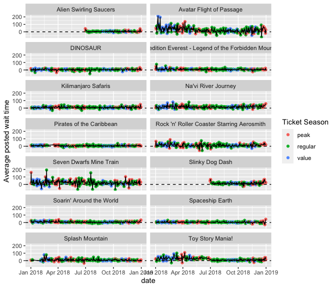
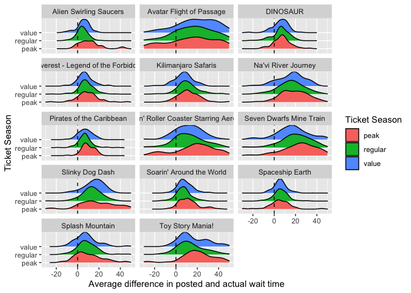

The goal of touringplans is to provide access to Disney World Ride Wait Time Datasets curated by the TouringPlans.com team.
You can install the development version of touringplans with:
devtools::install_github("LucyMcGowan/touringplans")You can find a list of all data sets along with variable information on the touringplans package website
The touringplans_2018 data frame contains wait time data aggregated by hour for 14 attractions, along with some park-level daily metadata. The example below demonstrates how wait times by day are associated with the Ticket Season. The example below uses the tidyverse package to assist with data wrangling.
library(touringplans)
library(tidyverse)
touringplans_2018 %>%
count(name)
#> # A tibble: 14 × 2
#> name n
#> <chr> <int>
#> 1 Alien Swirling Saucers 2718
#> 2 Avatar Flight of Passage 5147
#> 3 DINOSAUR 4884
#> 4 Expedition Everest - Legend of the Forbidden Mountain 4950
#> 5 Kilimanjaro Safaris 4887
#> 6 Na'vi River Journey 5073
#> 7 Pirates of the Caribbean 5168
#> 8 Rock 'n' Roller Coaster Starring Aerosmith 5062
#> 9 Seven Dwarfs Mine Train 5622
#> 10 Slinky Dog Dash 2691
#> 11 Soarin' Around the World 5203
#> 12 Spaceship Earth 5078
#> 13 Splash Mountain 4964
#> 14 Toy Story Mania! 5045We can aggregate the hourly posted wait time data into an avarage wait time by day for each ride.
agg_2018 <- touringplans_2018 %>%
group_by(date, name, wdw_ticket_season) %>%
summarise(average_diff = mean(avg_spostmin - avg_sactmin, na.rm = TRUE), .groups = "drop") %>%
filter(average_diff > -300) # remove weird data points (more on this later!)On average, Disney over predicts wait times by 15 and a half minutes per day on the 14 rides included in this dataset during peak season, around 11 and a half minutes per day during regular season, and around 13 minutes per day during value season.
lm(average_diff ~ wdw_ticket_season, data = agg_2018) %>%
summary()
#>
#> Call:
#> lm(formula = average_diff ~ wdw_ticket_season, data = agg_2018)
#>
#> Residuals:
#> Min 1Q Median 3Q Max
#> -82.401 -8.734 -3.066 5.487 198.772
#>
#> Coefficients:
#> Estimate Std. Error t value Pr(>|t|)
#> (Intercept) 15.6420 0.6006 26.045 < 2e-16 ***
#> wdw_ticket_seasonregular -3.9076 0.7074 -5.524 3.53e-08 ***
#> wdw_ticket_seasonvalue -2.4144 0.8378 -2.882 0.00397 **
#> ---
#> Signif. codes: 0 '***' 0.001 '**' 0.01 '*' 0.05 '.' 0.1 ' ' 1
#>
#> Residual standard error: 17.57 on 3967 degrees of freedom
#> Multiple R-squared: 0.007723, Adjusted R-squared: 0.007223
#> F-statistic: 15.44 on 2 and 3967 DF, p-value: 2.095e-07
ggplot(agg_2018, aes(x = date, y = average_diff)) +
geom_point(aes(color = wdw_ticket_season)) +
geom_line() +
geom_hline(yintercept = 0, lty = 2) +
facet_wrap(~ name, ncol = 2) +
labs(y = "Average difference in posted and actual wait time",
color = "Ticket Season") We can see that there are some attractions that this holds true for moreso than others.
library(ggridges)
ggplot(agg_2018, aes(x = average_diff, y = wdw_ticket_season, fill = wdw_ticket_season)) +
geom_density_ridges() +
geom_vline(xintercept = 0, lty = 2) +
xlim(c(-30, 50)) +
facet_wrap(~ name, ncol = 3) +
labs(x = "Average difference in posted and actual wait time",
fill = "Ticket Season",
y = "Ticket Season")